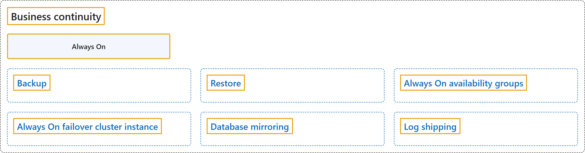

5. Business Continuity
Classification

Glossary
| Term | Definition | 中文解释 | Source |
|---|---|---|---|
| Business continuity 业务连续性 |
"The goal is to keep the business up and running with minimal or no interruption. This concept is also known as business continuity." | 目标是让业务在尽量少或没有中断的情况下持续运转。这个概念也称为业务连续性。 | Microsoft, 2025b, para. 2 |
| Always On Always On |
"Always On is an umbrella term for the availability features in SQL Server and covers both AGs and FCIs. Always On isn't the name of the AG feature." | Always On 是 SQL Server 可用性功能的总称，同时涵盖 AG 和 FCI。Always On 不是 AG 功能的名称。 | Microsoft, 2025b, "Availability groups" subsection, Note |
| Backup 备份 |
"A copy of data that you can use to restore and recover the data after a failure." | 数据的副本，可用于在故障后还原并恢复数据。 | Microsoft, 2026b, "Glossary of backup terms" section, row "backup (noun)" |
| Restore 还原 |
"A multiphase process that copies all the data and log pages from a specified SQL Server backup to a specified database, and then rolls forward all the transactions that are logged in the backup by applying logged changes to bring the data forward in time." | 一个多阶段过程，将指定 SQL Server 备份中的所有数据页和日志页复制到指定的数据库，然后通过应用已记录的更改来前滚备份中记录的所有事务，使数据向前推进到某个时间点。 | Microsoft, 2026b, "Glossary of backup terms" section, row "restore" |
| Always On availability groups Always On 可用性组 |
"The Always On availability groups feature is a high-availability and disaster-recovery solution that provides an enterprise-level alternative to database mirroring." | Always On 可用性组功能是一种高可用性和灾难恢复解决方案，提供了企业级的数据库镜像替代方案。 | Microsoft, 2026c, para. 2 |
| Always On failover cluster instance Always On 故障转移群集实例 |
"SQL Server Always On failover cluster instances use Windows Server Failover Clustering (WSFC) to provide local high availability. A failover cluster instance (FCI) is redundant at the server-instance level." | SQL Server Always On 故障转移群集实例使用 Windows Server 故障转移群集（WSFC）提供本地高可用性。故障转移群集实例（FCI）在服务器实例级别是冗余的。 | Microsoft, 2025a, para. 1 |
| Database mirroring 数据库镜像 |
"Database mirroring is a solution for increasing the availability of a SQL Server database." | 数据库镜像是一种提高 SQL Server 数据库可用性的解决方案。 | Microsoft, 2025c, para. 1 after the Caution and Important notes |
| Log shipping 日志传送 |
"SQL Server Log shipping allows you to automatically send transaction log backups from a primary database on a primary server instance to one or more secondary databases on separate secondary server instances." | SQL Server 日志传送让你能够自动将事务日志备份从主服务器实例上的主数据库发送到位于不同辅助服务器实例上的一个或多个辅助数据库。 | Microsoft, 2026a, para. 1 |
References
- Microsoft. (2025a, August 25). Always On failover cluster instances (SQL Server). Microsoft Learn. https://learn.microsoft.com/en-us/sql/sql-server/failover-clusters/windows/always-on-failover-cluster-instances-sql-server
- Microsoft. (2025b, December 11). Business continuity and database recovery - SQL Server. Microsoft Learn. https://learn.microsoft.com/en-us/sql/database-engine/sql-server-business-continuity-dr
- Microsoft. (2025c, September 2). Database Mirroring (SQL Server). Microsoft Learn. https://learn.microsoft.com/en-us/sql/database-engine/database-mirroring/database-mirroring-sql-server
- Microsoft. (2026a, February 23). About log shipping (SQL Server). Microsoft Learn. https://learn.microsoft.com/en-us/sql/database-engine/log-shipping/about-log-shipping-sql-server
- Microsoft. (2026b, August 27). Back up and restore SQL Server databases. Microsoft Learn. https://learn.microsoft.com/en-us/sql/relational-databases/backup-restore/back-up-and-restore-of-sql-server-databases
- Microsoft. (2026c, January 26). What is an Always On availability group? Microsoft Learn. https://learn.microsoft.com/en-us/sql/database-engine/availability-groups/windows/overview-of-always-on-availability-groups-sql-server